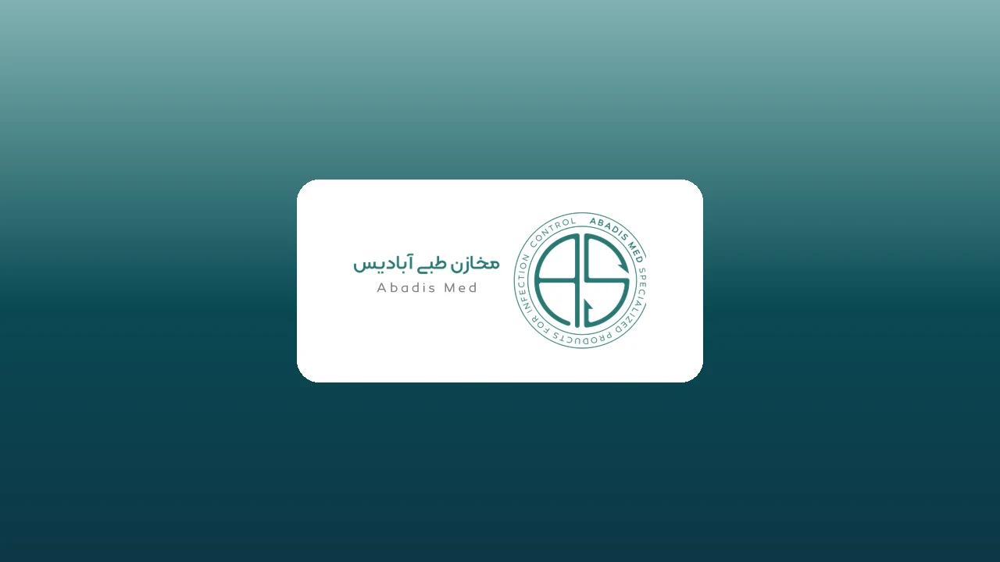

تقرير مصور عن حضور آباديس في معرض إيران هلث الدولي عام 2018
تقرير مصور عن حضور آباديس في معرض إيران هلث الدولي عام 2018
اقرأ المزيدالكشف عن منتج حامل (أداة تثبيت) آباديس
الكشف عن منتج آباديس الجديد، حامل أنبوب القصبة الهوائية في اليوم الأول من معرض إيران هلث 2019
اقرأ المزيدافتتاح صندوق استثمار مشاريع آباديس الإبداعية في معرض إيران هلث الدولي
شركة آباديس مستعدة للتعاون والاستثمار في المشاريع الإنتاجية الإبداعية المختصة بمجال المعدات الطبية ولوازم المستشفيات. نرجو من المهندسين والنخب والأساتذة وأصحاب
اقرأ المزيدتقرير مصور لمعرض إيران هلث الدولي الثاني والعشرين 2019
تقرير مصور لمعرض إيران هلث الدولي الثاني والعشرين 2019
اقرأ المزيدمقابلة مع زملاء ورؤساء آباديس للخزانات الطبية في معرض إيران للصحة 2019
تتقدم إدارة آباديس بجزيل الشكر وعظيم الامتنان إلى جميع زملائها لجهودهم خلال فترة إقامة المعرض. نتمنى أن يحقق هذا الفريق مع أهدافه المزيد من النجاح في مجال النهو
اقرأ المزيدمقابلة إذاعة إيران مع آباديس في معرض إيران هلث 2019
تغطية إخبارية لحضور آباديس في معرض إيران هلث 2019 في برنامج رهاورد على إذاعة إيران. مع الكشف عن حامل أنبوب القصبة الهوائية وافتتاح مشروع صندوق آباديس للأفكار ht
اقرأ المزيدالتغطية الإخبارية لحضور آباديس في معرض إيران هلث على موقع Medirence
التغطية الإخبارية لحضور آباديس في معرض إيران هلث على موقع Medirence https://abadis-med.com/wp-content/uploads/2019/06/medirence-Abadis-Iranhealth.mp4
اقرأ المزيدمقابلة مجلة “الهندسة الطبية” مع المستشار الاستراتيجي لشركة آباديس
مقابلة مجلة “الهندسة الطبية” مع المستشار الاستراتيجي لشركة آباديس
اقرأ المزيدجريدة “غذا ودارو” العدد 40
في هذا القسم من الموقع يمكنكم الاطلاع على العدد 40 من جريدة “غذا ودارو”. اضغط على هذا الرابط للمشاهدة.
اقرأ المزيداليانصيب الكبير لشركة آباديس
ندعو جميع الممرضين والمسعفين وجميع الأعزاء العاملين في المستشفيات التي ندعمها، إلى إرسال صورتهم أو مقطع فيديو لهم مع أكياس شفط آباديس ذات الاستعمال الواحد، بالإ
اقرأ المزيدحضور آباديس في معرض شيراز الرابع للأجهزة الطبية
حضور الممثل المحترم لشركة آباديس ، وشركة دانش نوانديشان بهبود في معرض شيراز الرابع عشر للمعدات الطبية الموقع الدائم للمعارض الدولية لمحافظة فارس، قاعة بهار من 2
اقرأ المزيدأخبار أكثر عن مسابقة آباديس الكبيرة
للمشاركة في المسابقة، شاهد الفيديو أدناه. ابق معنا للفوز … https://abadis-med.com/wp-content/uploads/2022/03/33da398f9dea0eca0a045ec9c115885517630214-240p.mp4
اقرأ المزيدالخبر العاجل لآباديس
الرجاء الانتباه إلى الخبر العاجل الذي نشرته آباديس اليوم الثلاثاء 12 نوفمبر 2019 https://abadis-med.com/wp-content/uploads/2022/03/df856f7e5793b40b5034500be1a9b
اقرأ المزيديانصيب آباديس الكبير 2020 بمناسبة عيد التمريض
أقيم يانصيب آباديس الكبير في يوم التمريض عام 2020 … ندعوكم لمشاهدة الفيديو الكامل لليانصيب.
اقرأ المزيدحضور شركة آباديس في معرض المعدات الطبية الرابع عشر في أصفهان
تدعو شركة آباديس جميع الزملاء والأحباء الذين هم معنا دائماً للمشاركة في معرض أصفهان الذي سيقام في 22 إلى 25 يناير من الساعة 15:00 إلى 21:00.
اقرأ المزيدأنشطة آباديس خلال أزمة كورونا
https://abadis-med.com/wp-content/uploads/2020/04/Final.mp4 حاولت شركة آباديس ، بوصفها إحدى الشركات المصنعة للمعدات الطبية، أن تحضر في أزمة كورونا بجوار المراكز
اقرأ المزيدالحصول على شهادة CE من الاتحاد الأوروبي
بكل فخر نهنئ جميع العاملين في مجموعة آباديس والزملاء والعملاء الأعزاء بحصول شركة آباديس على شهادة CE من الاتحاد الأوروبي كأول منتج لأكياس الشفط ذات الاستعمال ال
اقرأ المزيدالكشف عن المنتجات الجديدة لشركة آباديس
كشفت شركة آباديس ، أكبر مصنع لأكياس الشفط ذات الاستعمال الواحد في إيران، مؤخراً عن منتجين جديدين، وهما الشفط الجداري والمنظم. المنظم، وهو أحد المنتجات الجديدة ا
اقرأ المزيدعرض منتجات آباديس الجديدة في مجال الترشيح والتصفية
بدأت مجموعة آباديس بإنتاج الفلتر القاطع للتيار والفلتر المضاد للبكتيريا، وذلك لإكمال مجموعة منتجاتها. فلتر آباديس القاطع للتيار: مناسب لوضعه في مسار أجهزة الشفط
اقرأ المزيدأسماء الفائزين في مسابقة يوم التمريض عام 2022
أسماء الفائزين في مسابقة يوم التمريض التي عقدتها آباديس هي كالتالي: سعادة السيدة فاطمة اميديان من مستشفى الامام سجاد في شهريار سعادة السيدة معصومة جودرزي من مست
اقرأ المزيدمقابلة مديرنس مع رؤساء آباديس
اضغط على هذا الرابط لقراءة مقابلة الرئيس التنفيذي لشركة مديرنس مع رؤساء شركة آباديس والتي أجريت على إنستغرام (البث المباشر) حول موضوع الهندسة الطبية والمعدات ال
اقرأ المزيدصفحاتنا الافتراضية
اضغط على هذا الرابط للدخول إلى صفحاتنا الافتراضية.
اقرأ المزيدمقابلة وكالة أنباء فارس مع رؤساء آباديس
نأتي فيما يلي بنص المقابلة الإخبارية التي أجرتها وكالة فارس مع رؤساء آباديس: مقابلة مع الرؤساء الشباب والناجحين لشركة آباديس الناشطة في مجال إنتاج المعدات الطبي
اقرأ المزيدصورة تقديم الدعوة لمعرض إيران هلث 2022 من قبل رؤساء آباديس
نحن ننتظرك… بعد 5 سنوات من الجهود المتواصلة، وبحمد الله وبمرافقتك عزيزي معنا، تمكنّا من أن نؤثر على حماية البيئة عبر إحداث أكبر تأثيرعلى مكافحة العدوى في المراك
اقرأ المزيدمقابلة وكالة أنباء اخبار رسمي مع مديري آباديس
إن نويد حسنعلي، نائب رئيس التجارة والمبيعات، والشريك المؤسس لشركة آباديس ، مع 13 عاماً من الخبرة في مجال إدارة المعدات الطبية وخبير في الهندسة الطبية اختصاص الك
اقرأ المزيدتقرير معرض إيران هلث الدولي الثالث والعشرون
أقيم معرض إيران هلث الدولي الثالث والعشرون في مجال المعدات الطبية وطب الأسنان والمختبرات والصيدلانية في الموقع الدائم لمعارض طهران الدولي في الفترة من 24 إلى 27
اقرأ المزيدشركة آباديس أصبحت شركة قائمة على المعرفة
أصبحت شركة آباديس ، الناشطة في مجال مكافحة العدوى في المستشفيات وأكبر منتج لأكياس الشفط ذات الاستعمال الواحد في إيران، واحدة من الشركات القائمة على المعرفة في م
اقرأ المزيدمشاركة آباديس الطبية في معرض تبريز للمعدات الطبية
أقيم المعرض الطبي التخصصي الدولي الثامن عشر لإيران – تبريز بمشاركة أكثر من 130 جناحاً و 80 مُنتِجاً أخصائياً من الذين يشتغلون في مجالات (المعدات الطبية وطب الأس
اقرأ المزيدلا توجد نتائج.